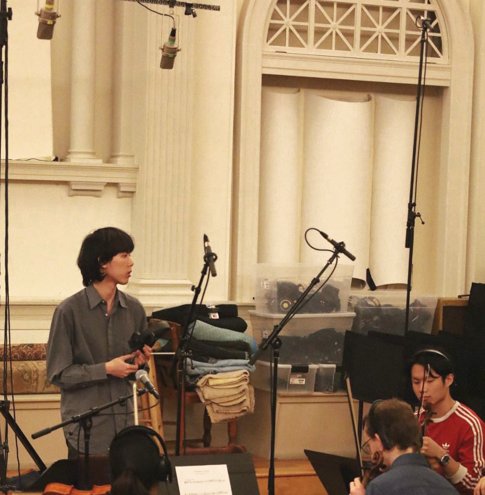

Ho Yik To, 何奕濤
Born in 2002, Ho Yik To currently lives in Boston, Massachussetts. He is a student at Berklee College of Music, where he studies scoring for video games and interactive media. He was also a conservatory student at the Academy of Performing Arts, Hong Kong where he studied the cello.
